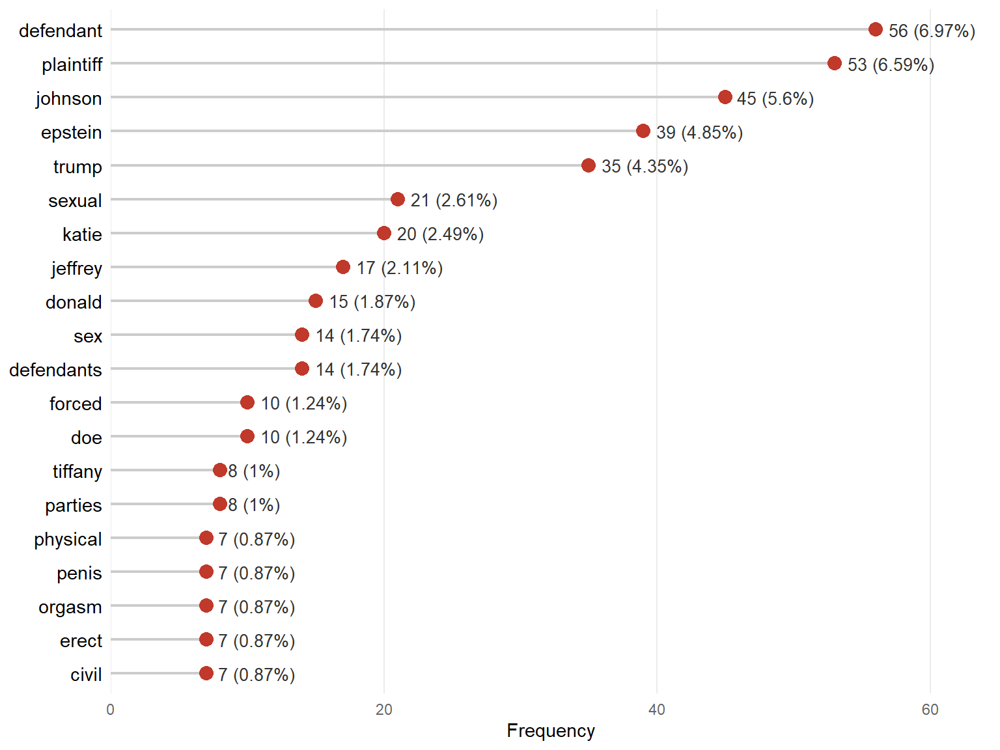
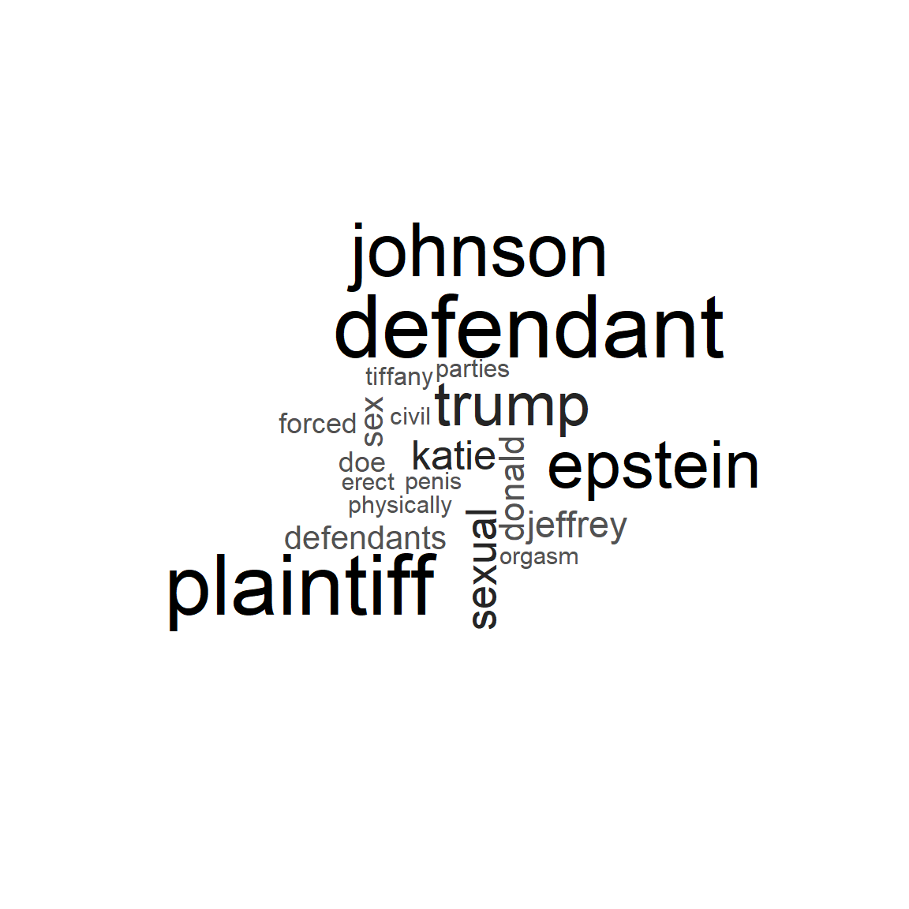
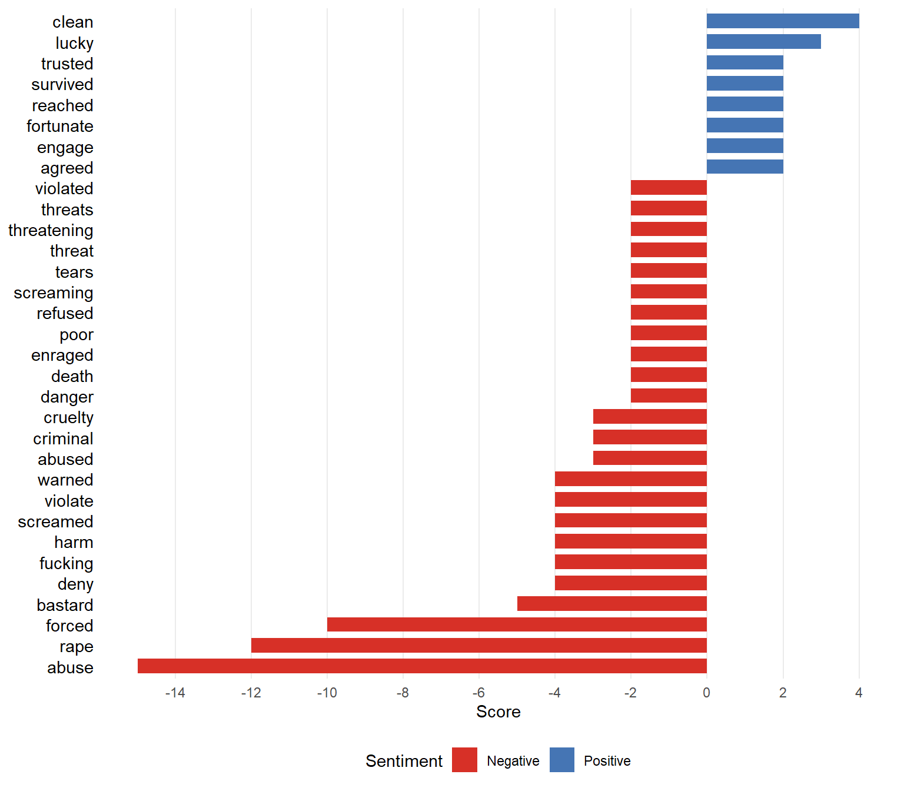
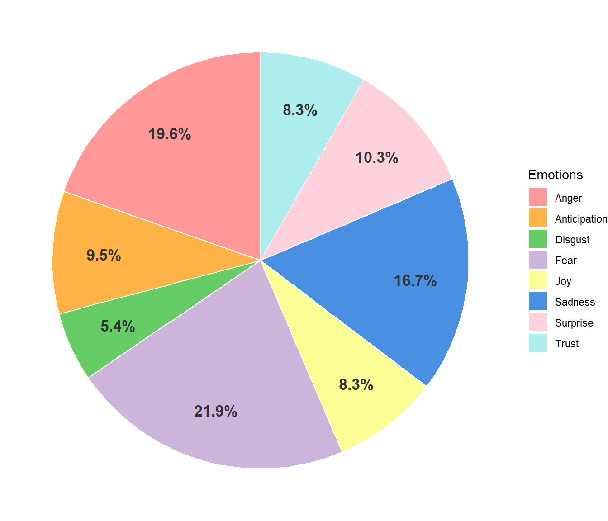
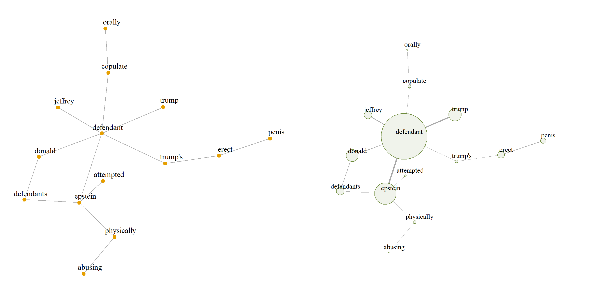
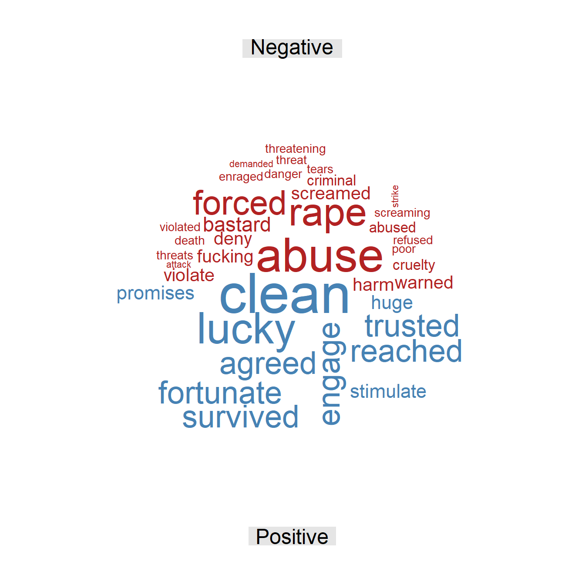
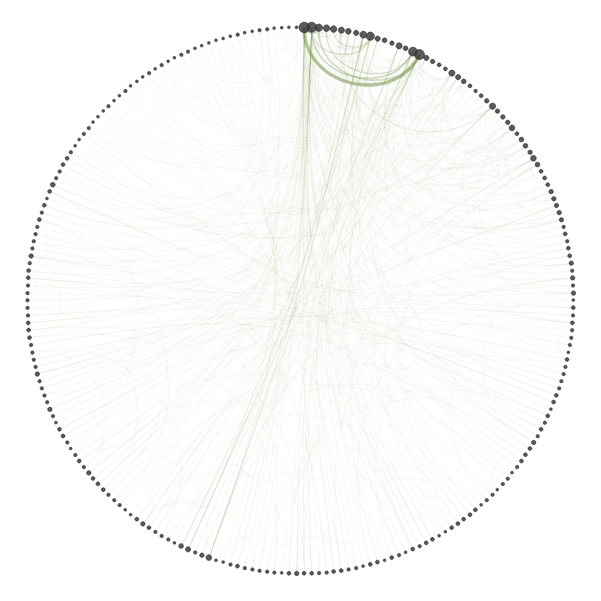
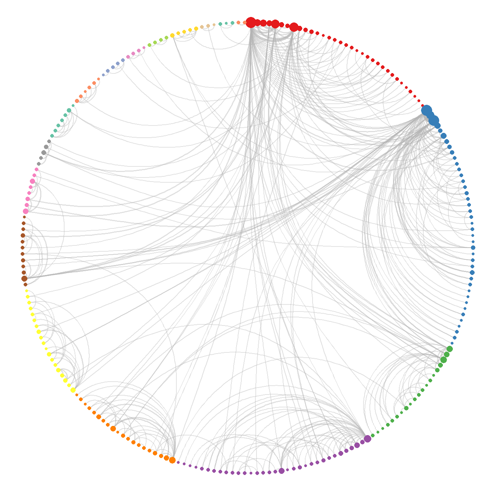

Johnson v. Trump and Epstein
Civil complaint filed on April 26, 2016
| Document type | Civil complaint (civil rights) |
| Court | U.S. District Court for the Central District of California |
| Case number | 5:16-cv-00797 |
| Source | CourtListener |
| Words (cleaned text) | 1,577 |
| Note | The document was transcribed manually. |
This legal document is a civil complaint for violation of civil rights filed by a plaintiff identified as Katie Johnson against Donald J. Trump and Jeffrey E. Epstein in the U.S. District Court for the Central District of California. The plaintiff alleges that, when she was a 13-year-old minor, she was lured with false promises of a modeling career to attend parties held at Epstein’s residence, where, according to the complaint, both defendants subjected her to repeated physical and psychological abuse and severe sexual assaults. The complaint argues that Trump and Epstein acted with extreme malice and in a coordinated manner, and that they later coerced her into silence through explicit death threats against her and her family. The account is also supported by the statement of a witness identified as Tiffany Doe, a former employee who claims to have witnessed the events. On these grounds, the plaintiff seeks one hundred million dollars in damages for the harm suffered and the violation of her fundamental rights. The allegations were never adjudicated on the merits.
Word frequency
Figure 1 shows the most frequently used words in the text. Overall, no word stands out in terms of relative frequency. The most frequent terms refer to the parties involved, such as “plaintiff” and “defendant”, and to proper names such as “Katie Johnson”, “Donald Trump”, and “Jeffrey Epstein”, which indicates that the general ideas and the narrative of the text revolve entirely around them. Among the most frequent words, those referring to the alleged offense also stand out, such as “sexual”, “sex”, “penis”, “orgasm”, “erect”, “forced”, and “physical”, which shows that this is another central theme of the complaint and that it is described in great detail and in crude, explicit terms.
Figure 2 shows that no word stands out disproportionately; however, a set of terms related to the parties to the complaint does stand out to some extent. In addition to the words referring to the alleged sexual abuse, the word “parties” stands out, which gives an indication of the setting in which, according to the complaint, the abuse took place: the parties organized by Epstein.

In conclusion, the word frequency analysis gives a very clear indication of the tone and subject matter of the complaint, which focuses firmly on the parties involved and on the alleged acts. The events are narrated in detail, using an explicit narrative and a vocabulary that can be considered strong and highly sensitive. Overall, the document sets out very clearly who, according to the complaint, took part in the events described and how they acted.
Sentiment analysis
Figure 3 shows three words with a very high negative charge: “abuse”, “rape”, and “forced”, all of them directly linked to the offenses alleged in the complaint. In addition, a considerable number of terms with a significant negative score reflect the cruelty and brutality of the acts described, such as “harm”, “screamed”, “abused”, “cruelty”, “threats”, and “death”. Consequently, almost all of the negative sentiment, besides having much higher scores than the positive sentiment, consists of violent and aggressive words that reflect the seriousness of the events described.

The words associated with positive sentiment are “clean”, “lucky”, “trusted”, “survived”, “reached”, “fortunate”, “engage”, and “agreed”; however, compared with the negative sentiment, they are few and have low scores. It should be noted that, depending on the context, these terms do not always have a positive connotation. For example, terms such as “survived”, “lucky”, and “fortunate” may be used to describe how the victim managed to escape the abuse alive. Likewise, terms such as “agreed” and “engage” may refer to the coercion and the forced arrangements mentioned in the complaint to make the plaintiff remain silent.

Figure 4 shows that the three predominant emotions in the text, which together account for more than 50% of the words, are fear, anger, and sadness. This distribution is understandable given the very explicit vocabulary used in the complaint and the way the events are narrated, which clearly evoke these emotions. By contrast, joy and trust are among the categories with the lowest percentage of terms, which is fully consistent with the text. Since the complaint is a crude account of abuse, this marked contrast between the most and least frequent emotions is entirely consistent with the seriousness of the events it describes.
In conclusion, the emotions and sentiments present in the text are mostly negative. This is evident both in the terms used and in the way they are structured within the text, with words linked to serious offenses, such as rape or threats, and very visceral terms to describe the events. By contrast, the words associated with positive sentiment are not very frequent and, as discussed above, their connotation is not always positive, since their actual meaning depends strictly on the context in which they are used in the complaint.
Word relationships
The bigram network was built from the bigrams with a frequency of at least 2, in order to obtain an informative network rather than a noisy one, thus keeping the most relevant information in the text. The analysis uses the largest connected component of the graph, since it concentrates the most relevant information.

Figure 5 shows how the terms in the connected component of the bigram network are related. The central vertex with the highest strength is clearly “defendant”, a term that unifies the references to both Trump and Epstein. The network also explicitly sets out the details of the alleged abuse and the role attributed to each individual, through combinations such as “physically abusing”, “orally copulate”, or “Trump’s erect penis”. This relational structure places the defendants and the detailed description of the conduct attributed to them at the center of the narrative.
The bigram network shows in detail the nature of the alleged offenses and that the language used in the document is predominantly explicit and crude. These combinations are also highly relevant within the structure, given the strength of their vertices and the weight of their edges; that is, these bigrams are frequent in the text and are used more often than any other combination of two words. Although one of the main figures of the complaint, the plaintiff, does not explicitly appear in the connected component, it is easy to infer that all of the actions refer directly to her.
The skipgram network is built with all pairs, regardless of their frequency, which makes it possible to find semantic relationships that are not perceptible at first sight. The largest connected component is also used, since it contains the most important information and allows the computation of statistics that are not defined on a disconnected graph, such as the mean distance between vertices.
| Word 1 | Word 2 | Freq. | Rel. freq. |
|---|---|---|---|
| Plaintiff | Johnson | 45 | 5.93% |
| Defendant | Epstein | 20 | 2.64% |
| Plaintiff | Katie | 20 | 2.64% |
| Katie | Johnson | 19 | 2.50% |
| Jeffrey | Epstein | 17 | 2.24% |
| Defendant | Trump | 16 | 2.11% |
| Donald | Trump | 15 | 1.98% |
| Defendant | Jeffrey | 10 | 1.32% |
| Defendant | Donald | 8 | 1.05% |
| Tiffany | Doe | 8 | 1.05% |
Table 1 shows the most frequent skipgrams in the text. The relative frequency shows that no combination stands out disproportionately; however, all of the most frequent skipgrams refer directly to the main actors: Johnson, Trump, and Epstein. In addition, the last of the most frequent skipgrams is “Tiffany Doe”, the witness named in the complaint. This distribution shows the relevance and prominence of all the actors in the complaint, since they are mentioned repeatedly throughout the document.
| Statistic | Value |
|---|---|
| Mean distance | 4.94 |
| Mean degree | 3.46 |
| SD of degree | 5.29 |
| Clique number | 5.00 |
| Density | 0.02 |
| Transitivity | 0.11 |
| Assortativity | -0.18 |
| Word | Centrality |
|---|---|
| Plaintiff | 1.00 |
| Johnson | 0.98 |
| Katie | 0.64 |
| Defendant | 0.20 |
| Epstein | 0.20 |
| Forced | 0.17 |
| Trump | 0.16 |
| Johnson’s | 0.11 |
| Jeffrey | 0.10 |
| Alleges | 0.10 |
Table 2 shows that the mean distance of the network is 4.94; that is, on average, almost five steps are needed to go from one word to another. Being a relatively low value, it suggests a centralized narrative in which the different concepts and actors are quickly interconnected throughout the document. This interconnection is supported by the mean degree of 3.46, meaning that each word is directly connected to about three and a half different terms on average. However, the standard deviation of the degree is high (5.29) compared with its mean, which reveals great variability: a few words are connected to many others, while most have very few connections. In other words, there are hub words that appear next to many different terms, which points to very marked themes in the text.
Regarding the grouping of words, the clique number is 5, meaning that the largest group of words that are all connected to each other has 5 terms; such a structure usually reflects a frequently repeated central argument or words that always appear together. At the global level, however, the density of the network is 0.02, meaning that only 2% of all possible connections are present; the network is therefore very sparse, as is usual in word networks with a large and varied vocabulary. Consistently with this sparsity, the transitivity is 0.11, so there is only a 11% probability that two words connected to the same term are also connected to each other (forming triangles), which reflects a structure with low cohesion. Finally, the degree assortativity is negative (-0.18), indicating a mild tendency of highly connected words to link with words that have few connections, rather than with other central words.
Table 3 identifies the most relevant terms according to eigenvector centrality. The vertex with the highest score is “plaintiff”, which shows that the word network is organized directly around this concept. This is consistent, since she is the central subject to whom both the alleged abuse and the actions of the alleged perpetrators refer; this is confirmed by the next terms in order of importance, “Johnson” and “Katie”, which refer to the same person. On the other hand, a set of words referring to the alleged perpetrators, such as “defendant”, “Trump”, and “Epstein”, stands out as another structural axis of the network. Finally, a word that ranks above some of the names of the actors is “forced”, which can be used in different contexts in the complaint, such as being forced to perform sexual acts or to remain silent, which explains its centrality in the analysis.
| Cluster | Size | Word | Strength |
|---|---|---|---|
| 1 | 33 | Defendant | 117 |
| Epstein | 74 | ||
| Trump | 62 | ||
| 2 | 41 | Plaintiff | 123 |
| Johnson | 108 | ||
| Katie | 49 | ||
| 3 | 20 | Doe | 26 |
| Tiffany | 22 | ||
| Witness | 15 | ||
| 4 | 33 | Sexual | 38 |
| Orgasm | 18 | ||
| Physical | 13 | ||
| 5 | 20 | Sex | 26 |
| Parties | 15 | ||
| Underage | 11 |
Table 4 presents the words with the highest strength in the five largest clusters obtained with the fast greedy algorithm. In cluster 1, the predominant terms are “defendant”, “Epstein”, and “Trump”, so the theme of this group revolves around the defendants. A similar pattern occurs in clusters 2 and 3, which refer directly to the plaintiff and to the witness, respectively; this shows that three of the main cores of the complaint correspond to its key figures: defendants, plaintiff, and witness. Cluster 4, on the other hand, is characterized by the terms “sexual”, “orgasm”, and “physical”, and focuses explicitly on the description of the alleged act. Finally, cluster 5 revolves around the setting in which, according to the complaint, the offenses took place, through keywords such as “parties” and “underage”.
Additional figures


